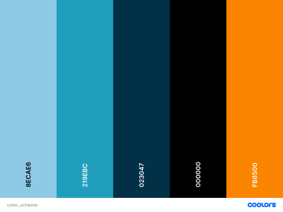

The Color Scheme of justintimeweather.org will have an appropiately soft and calm tones. The Weather is always erratic, so why should our site be that way too?
style="color: #8ECAE6">Website Background - #8ECAE6
style="color: #023047">Header - #023047
style="color: #023047">Footer - #023047
style="color: #219EBC">Nav Bar - #219EBC
style="color: #FB8500">text in Nav Bar - #FB8500
style="color: #000000">Text - #000000
